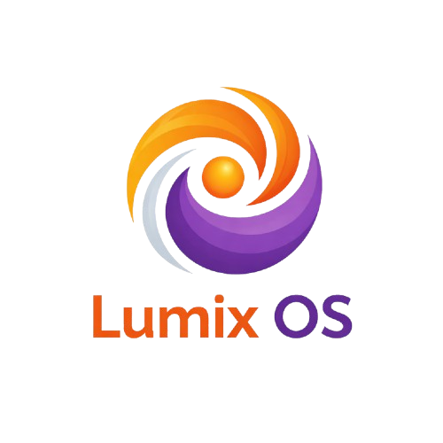

Two philosophies. One experience.
We are currently in the very early stages of development.
Lumix OS will be available in two editions:
Arch-based (rolling release) and Debian-based (stable base).
The first ISO images are not yet released. Stay tuned.